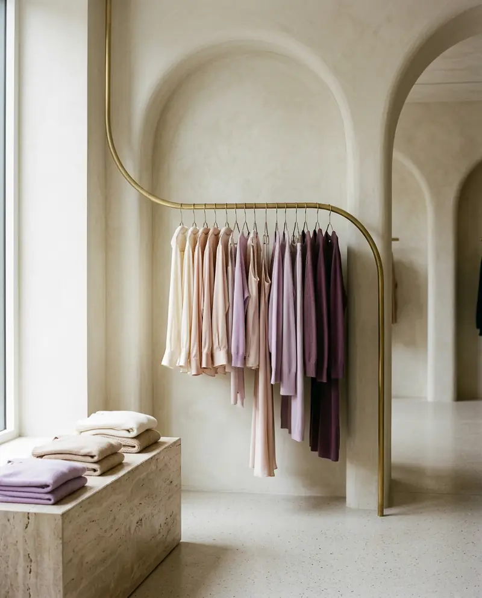

How costly are returns?
Returns, the hidden cost of selling
$849.9B
of US merchandise returned in 2025
19.3%
of online sales come back, vs 15.8% overall
9%
of returns are fraudulent
Source: 2025 Retail Returns Landscape, NRF and Happy Returns, 2025
Retail Intelligence
How do people shop, and what keeps them coming back?
4 insights · every number sourced

How costly are returns?
$849.9B
of US merchandise returned in 2025
19.3%
of online sales come back, vs 15.8% overall
9%
of returns are fraudulent
Source: 2025 Retail Returns Landscape, NRF and Happy Returns, 2025
What makes shoppers loyal?
Source: 2025 Retail Returns Landscape, NRF and Happy Returns, 2025
Is secondhand part of the shop?
34%
of apparel budgets planned for secondhand (46% for Gen Z and Millennials)
+23%
growth in US online resale in 2024
28%
bought secondhand through social commerce last year
Source: 2025 Resale Report, ThredUp with GlobalData, Mar 2025
Will AI sell for me?
53%
of US consumers who used gen-AI search also used it to shop
85%
are more satisfied with AI-assisted shopping
2–3×
faster growth for secondhand than first-hand through 2027
Source: The State of Fashion 2026, McKinsey & Company and The Business of Fashion, Nov 2025
For your brand
Fit guidance and great photos cut returns.
Consider a resale or take-back programme.
Write product data that AI assistants can read.
FashionOS will help you plan assortments and spot return risks before launch.
Join the WaitlistFigures are as published by each source. Ranges shown at their midpoint are marked.